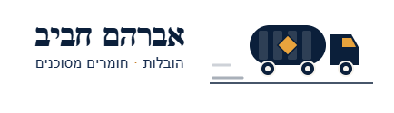

אברהם חביב הובלות
אברהם חביב הובלות היא חברה ותיקה ומובילה בתחום ההובלות בישראל, הפועלת מזה 55 שנה ממושב עין העמק. החברה מתמחה בהובלות כלליות ובהובלת חומרים מסוכנים (חומ״ס) למפעלים ברחבי הארץ, ונחשבת מהשמות המובילים בענף. כל צי המשאיות של החברה מאושר להובלת חומ״ס ומצויד בציוד הנלווה הנדרש, ונהגי החברה מחזיקים בכל ההיתרים והאישורים המתחייבים על פי חוק. בנוסף, החברה פועלת עם ביטוח מטען מלא והיתר רעלים מורחב, ומעניקה ללקוחותיה שירות מקצועי, בטיחותי וזמין בכל עת.
שותפות מקצועית עם אקו אויל
חברת אברהם חביב הובלות היא שותפה אסטרטגית מרכזית של אקו אויל, ואחראית על הובלת אריזות פסולת החומ״ס שלנו – קוביות, חביות וג'ריקנים – מהלקוחות אל מתקני הטיפול. בזכות המקצועיות, האמינות והיחס האישי של שרון אברהם וצוותו, אקו אויל בחרה לעבוד עימם בצמוד ובאופן מלא, מתוך אמון מוחלט ביכולתם לספק שירות הובלה בטיחותי, מדויק וחסר פשרות בתחום רגיש ומחייב זה.